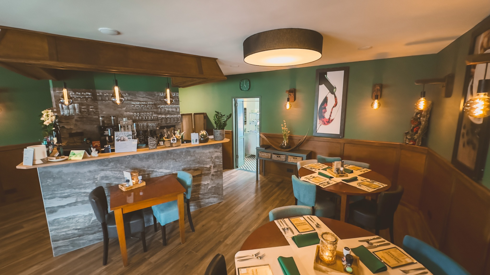
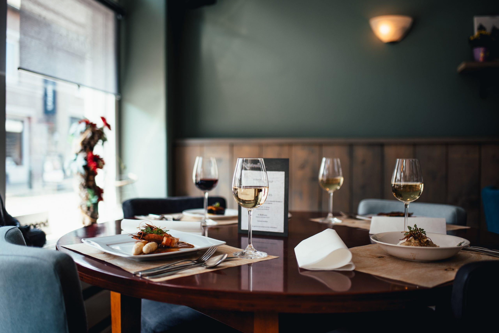
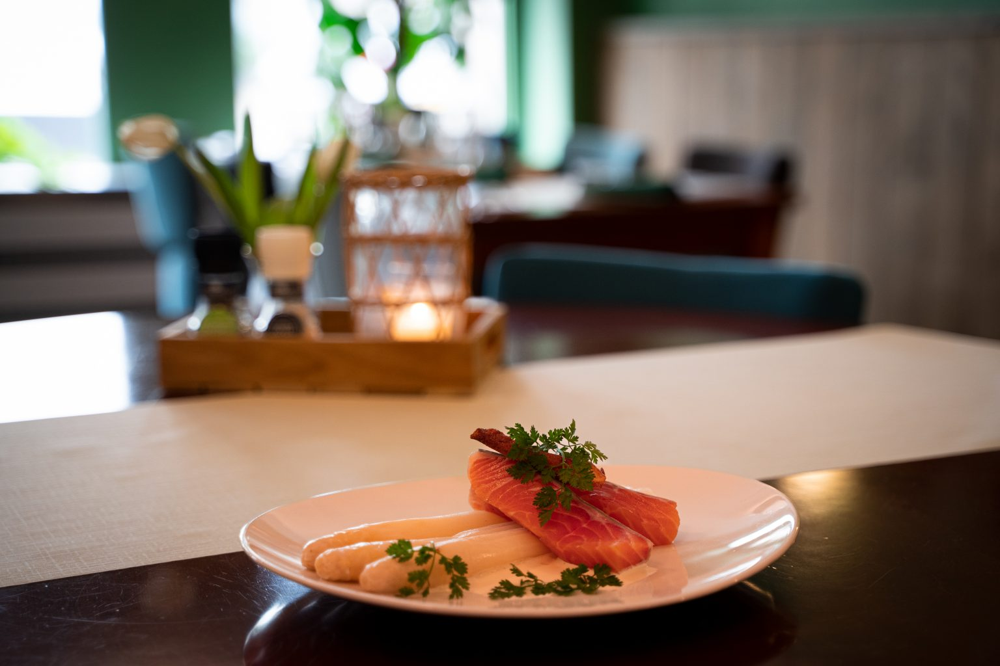
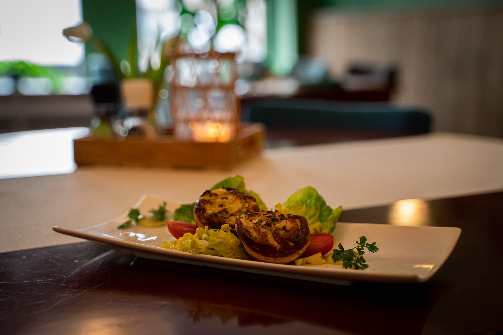
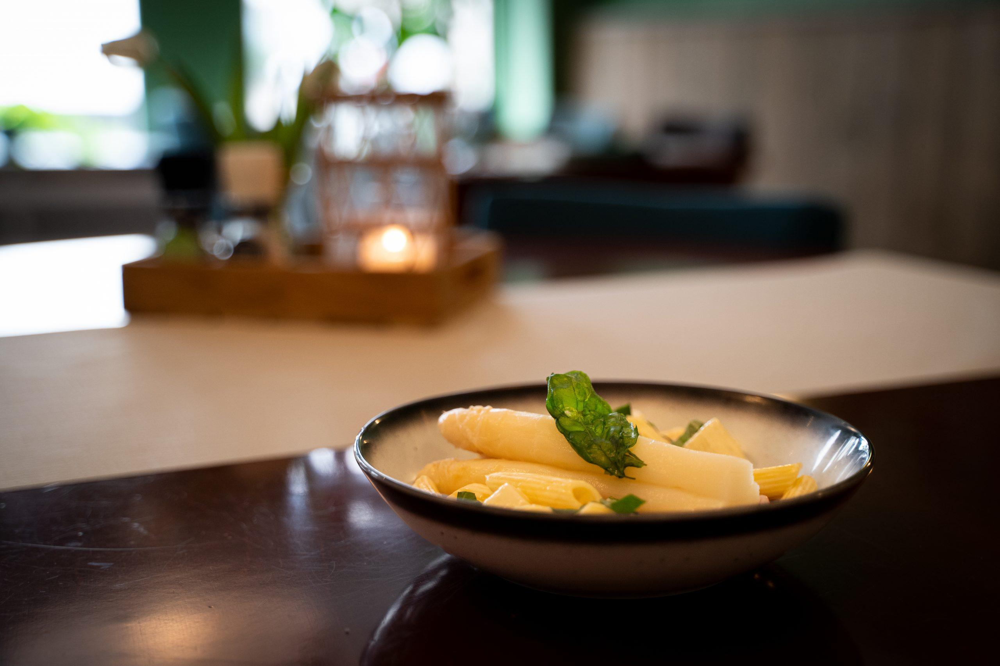
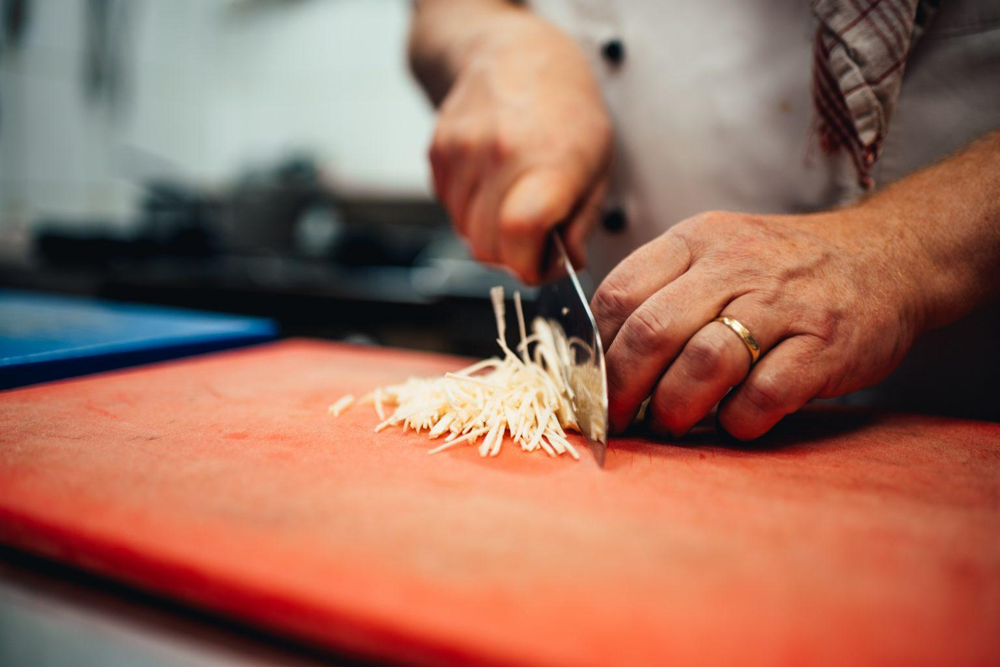
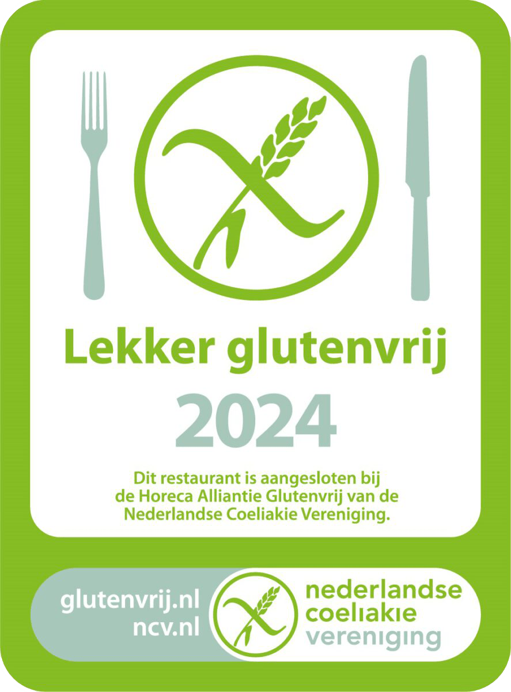
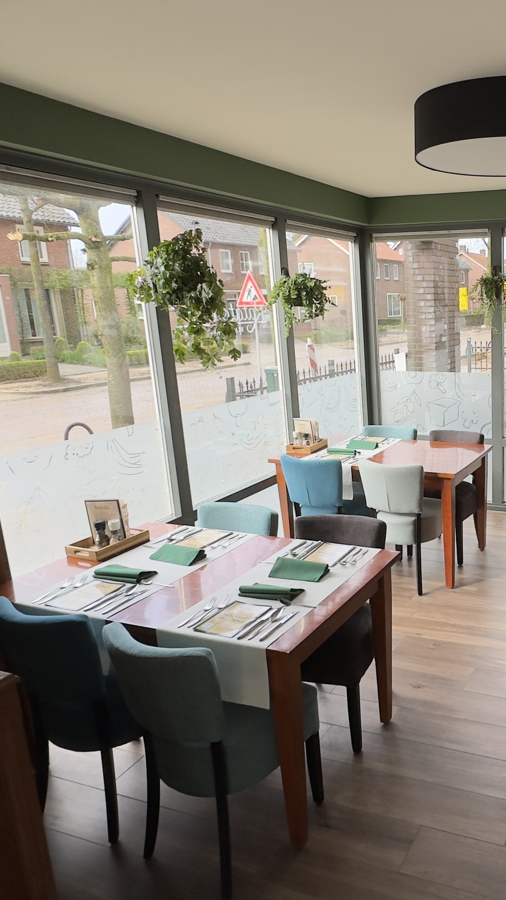
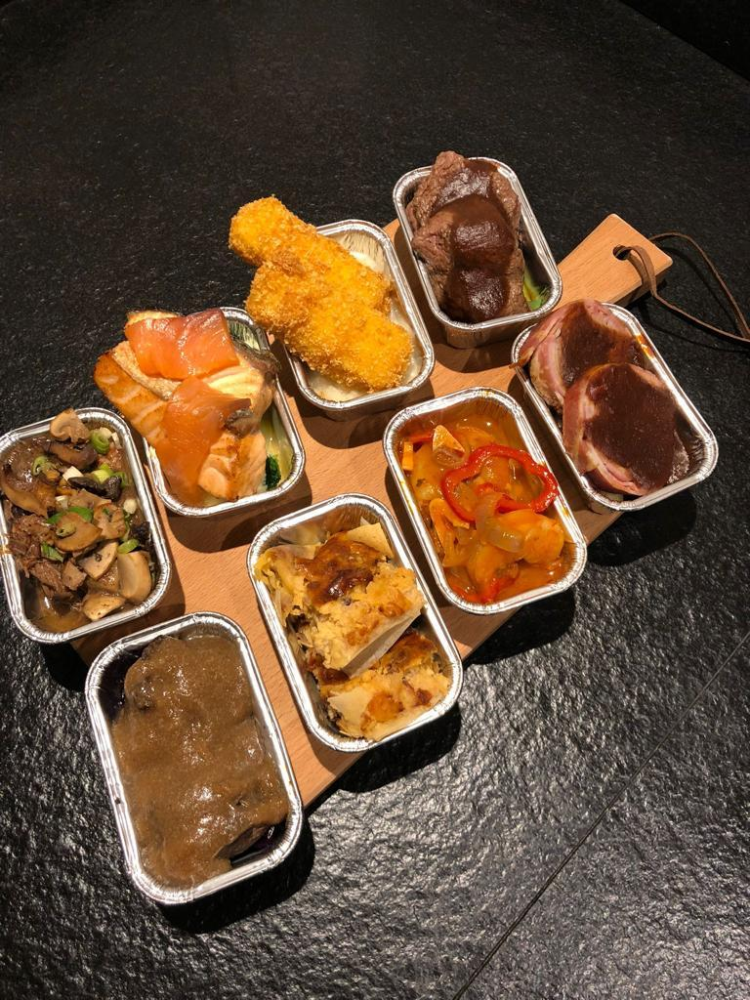

Genieten voor iedereen
Heb je geen last van een voedingsintolerantie? Uiteraard kun je dan ook bij Ratatouille terecht. Intolerantie of niet: iedereen geniet bij Ratatouille!

Hoofdstraat 12, Hoogeloon
Alles op onze kaart is glutenvrij en lactosevrij. Dagvers, huisgemaakt en met een ruime keuze vegetarisch. En wie geen allergie heeft, is natuurlijk net zo welkom.
Bij Ratatouille kan elke persoon zorgeloos lekker eten, zonder uitzonderingen. Alle gerechten die je op de kaart vindt zijn allergeen-, gluten- en lactosevrij. Ook hebben we een uitgebreid gamma aan vegetarische maaltijden. We passen graag de samenstelling van onze gerechten aan, zodat iedereen optimaal kan genieten.
Onze menukaart bestaat volledig uit gluten- en lactosevrije gerechten. We werken uitsluitend met dagverse ingrediënten, en je vindt op onze kaart diverse gerechten voor een vaste en toegankelijke prijs. Daarbij is het bij ons heerlijk koel vertoeven op hete zomerdagen.
Chef Ad en gastvrouw Ilse

Speciale aandacht voor specifieke eetwensen. We passen de samenstelling van een gerecht graag voor je aan.
We koken op maat en niet met voorverpakte zaken. Alles is vers én huisgemaakt.
Onze chef bedenkt voortdurend nieuwe gerechten, aangepast aan het seizoen.




Iedereen. Onze chef Ad bewijst dagelijks dat lactose- en glutenvrije gerechten overheerlijk zijn.
Heb je geen last van een voedingsintolerantie? Uiteraard kun je dan ook bij Ratatouille terecht. Intolerantie of niet: iedereen geniet bij Ratatouille!
Gluten is een eiwit in tarwe, gerst en rogge. Voor mensen met coeliakie, glutenintolerantie of -gevoeligheid kan het ernstige klachten geven. Onze keuken is volledig toegewijd aan glutenvrij koken, van voorgerecht tot dessert.
Lactose, een natuurlijke suiker in zuivel, geeft sommige mensen spijsverteringsproblemen. Kok Ad stelde met passie een kaart zonder lactose samen, met alleen de fijnste ingrediënten en strenge bereidingsrichtlijnen.
Een warm welkom voor mensen met obesitas, een maagverkleining of andere maagklachten. Evenwichtige gerechten met gecontroleerde portiegroottes, voedzame ingrediënten en een persoonlijke benadering.

Ratatouille is aangesloten bij de Horeca Alliantie Glutenvrij van de Nederlandse Coeliakie Vereniging.

We zetten met alle plezier dat stapje extra. Maak je een reservering en geef je daarbij je eetwensen door? Dan doen wij inkopen op basis van jouw wensen. Daarom vragen we je om vooraf te reserveren.
Geen nood: ook zonder reservering ben je meer dan welkom. We hebben altijd genoeg voor iedereen.
Reserveer en geef je wensen door
★★★★★
"Waar kan ik een 6e ster aanvinken. Heerlijk gegeten en heel erg kunnen genieten. Letterlijk alles is Pico Bello in orde."
ferhatsahin90
Wil je chef-kok, gastvrouw of gastheer worden? Dan zit je bij ons goed! Kok Ad en gastvrouw Ilse zijn erkend als begeleiders, zodat we bij Ratatouille vakmensen kunnen opleiden.
Wil je iemand het perfecte cadeau geven? Denk dan eens aan een cadeaubon van Ratatouille. Vraag ernaar via e-mail of telefoon.
Lid van de NCV of VCV? Laat je lidkaart zien in het restaurant en je krijgt 10% korting (exclusief de drankkaart).
Reserveer graag vooraf, zeker als je eetwensen hebt. Dat kan hier, of bel of mail ons.
| Woensdag t/m zondag | 12:00 tot 23:00 |
|---|---|
| Lunch | 12:00 tot 16:00 |
| High tea | 14:00 tot 16:30 |
| Diner | 16:00 tot 20:00 |
| Maandag en dinsdag | gesloten |